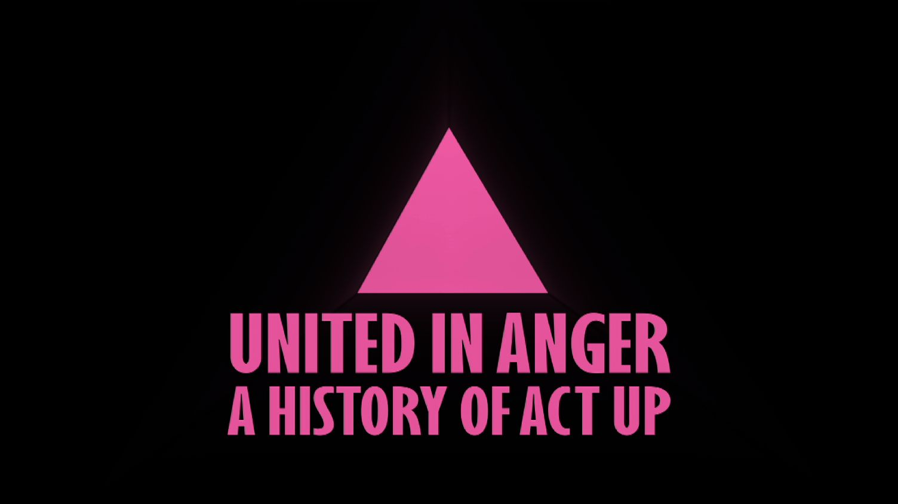
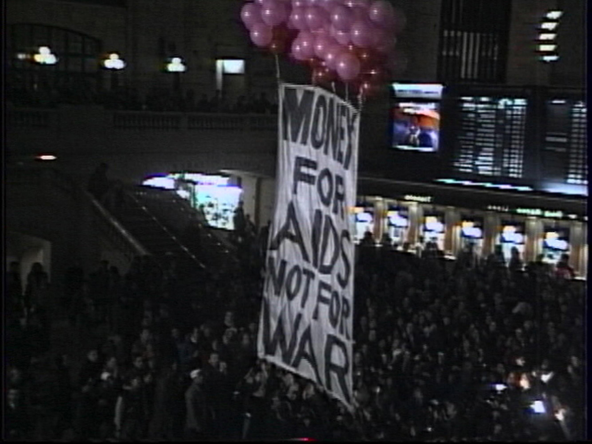
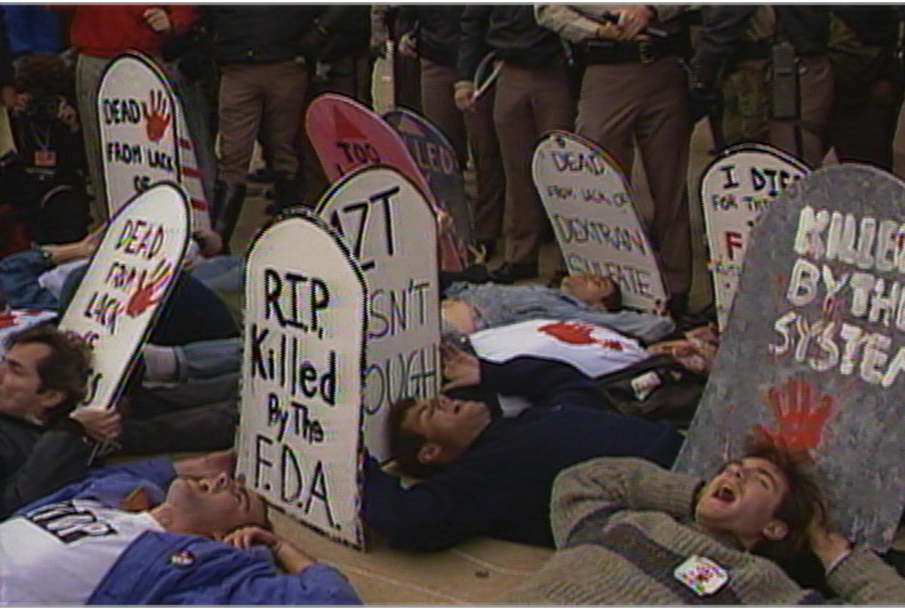

United in Anger: A History ACT UP by Jim Hubbard
Date: 4/26
Time: 20:00-22:30
Location: EUROLIVE CINEMA, Shibuya (KINOHAUS 2F)
日にち：4月26日（日）
時間：20:00-22:30
場所：ユーロライブ（渋谷）
United in Anger (93min) - Jim Hubbard, USA, 2012
20:00-21:30
+ Talk: Q&A with Jim Hubbard, director of United in Anger
21:30-22:30
20:00〜 『怒りを力にーACT UPの歴史』
(監督ジム・ハバード｜2012年｜93分｜アメリカ)
協力：FAV 連連影展
1980年代と90年代前半、HIV/AIDSの蔓延を認識しながら対策を怠る政府や、問題を無視するメディアなどに文字通り命をかけて立ち向かった草の根アクティヴィスト集団ACT UP（アクトアップ）。怒りをとおし繋がった彼らの活動を当時もその現場にいたジム・ハバードが監督したドキュメンタリー。世界中で繰り広げられた活動の中から主にニューヨーク支部がおこなった大胆なアクションなどの映像（運動の一部として記録された）に加え、現在も生きる当時のACT UPのメンバーたちが当時を振り返る。
（予告映像：https://youtu.be/X4ZacAyc4b8 ）
＊ ゲスト：ジム・ハバード監督（オンライン Live Q&A）
＊ 手話通訳つき
images: © Jim Hubbard
  